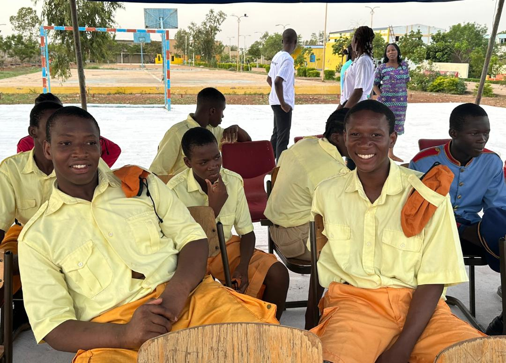

Un accompagnement clair, étape par étape, pour chaque famille.
Intégrer Apidon Royal College, c'est rejoindre une communauté éducative engagée dans la formation académique, humaine et citoyenne de chaque élève.
Votre enfant est déjà inscrit à Apidon Royal College.
Voir la réinscription →
Le processus d'admission.
Cinq étapes simples, pensées pour préparer sereinement l'inscription de votre enfant.
Ouvert aux élèves du collège et du lycée.
Collège. 6e à 3e.
Lycée. 2nde à Tle.
Préparer le dossier.
Les pièces demandées peuvent notamment comprendre.
Une information transparente, mise à jour chaque année.
Les montants figurent dans la circulaire officielle de rentrée.
Frais d'inscription, frais de scolarité, frais d'internat, supports pédagogiques. Un calendrier de versements est communiqué aux familles chaque année.
Bien préparer votre démarche.
Prendre contact tôt
Pour préparer sereinement l'inscription de votre enfant, sans précipitation.
Préparer le dossier à l'avance
Rassembler les documents avant de commencer la démarche, pour éviter tout retard.
Visiter le campus
Rencontrer l'équipe et découvrir l'environnement avant de finaliser votre décision.
Comprendre notre philosophie d'admission.
Les réponses aux questions que se posent le plus souvent les familles sur notre approche des admissions.
Pourquoi ARC ne recrute-t-il pas uniquement les meilleurs élèves ?
Parce que notre mission n'est pas de sélectionner les talents, mais de les révéler. Une école qui ne recrute que les meilleurs obtient souvent de bons résultats. C'est logique. Mais elle ne démontre pas nécessairement sa capacité à transformer les jeunes. À ARC, nous croyons qu'un adolescent ne se résume jamais à ses notes du moment. Derrière une moyenne parfois modeste peuvent se cacher une intelligence remarquable, une volonté encore fragile, un potentiel inexploité ou des circonstances de vie difficiles. Notre ambition est donc de donner leur chance à des jeunes qui souhaitent progresser et qui acceptent de s'engager dans une démarche exigeante. Nous ne recherchons pas seulement des élèves performants ; nous recherchons des jeunes transformables.
Pourquoi ARC accepte-t-il parfois des élèves en classes d'examen malgré un niveau initial approximatif ?
Parce que nous croyons davantage à la capacité de progression qu'à la photographie d'un instant. Accueillir un élève en classe d'examen représente effectivement un risque. Mais toute transformation comporte une part de risque. Lorsqu'un jeune manifeste de la motivation, de l'humilité, de la discipline et une véritable volonté de travailler, nous considérons qu'il mérite une opportunité. Alors, nous travaillons à lui apporter un accompagnement exceptionnel, une discipline exigeante, un suivi personnalisé et un environnement propice au dépassement de soi. Certaines réussites extraordinaires commencent précisément lorsque quelqu'un accepte de faire confiance à un jeune que d'autres avaient déjà condamné.
Pourquoi ARC met-il autant l'accent sur la transformation et le progrès de ses apprenants ?
Parce que les connaissances vieillissent, mais que le caractère demeure. Les examens évaluent ce que l'on sait. La vie évalue surtout ce que l'on est. Notre objectif est donc de former des jeunes capables de continuer à apprendre, de travailler avec rigueur, de faire preuve d'intégrité, de respecter les autres, de prendre des responsabilités et de persévérer face aux difficultés. Nous voulons que chaque élève quitte ARC meilleur qu'il n'y est entré, non seulement sur le plan scolaire, mais aussi sur le plan humain, peu importe le temps qu'il y passe. Pour ARC, la véritable réussite éducative consiste à transformer durablement un jeune.
Pourquoi ARC privilégie-t-il la transformation profonde des élèves plutôt que la seule recherche d'un taux de réussite élevé aux examens ?
Parce qu'un excellent taux de réussite peut parfois être obtenu par une simple sélection des meilleurs candidats. Former une école prestigieuse est relativement facile lorsqu'on refuse les élèves qui présentent des difficultés. Former des jeunes qui progressent fortement, quels que soient leurs points de départ, est beaucoup plus exigeant. À ARC, nous souhaitons être jugés pas seulement sur les résultats obtenus, mais aussi sur la valeur ajoutée que nous apportons à chaque élève. Notre fierté ne sera jamais uniquement le pourcentage de réussite au BEPC ou au Baccalauréat, même quand nous nous stabiliserons à 100%, comme nous en avons déjà obtenu avec une promotion moyenne et quelques cas difficiles. Notre plus grande réussite sera de voir des jeunes devenir des femmes et des hommes responsables, cultivés, autonomes, honnêtes, intègres, crédibles et intelligents, capables de servir leur pays et d'inspirer les autres. Les taux de réussite sont importants, ARC y travaille tout en restant focus sur sa mission de transformation et de progrès, vu son choix de recevoir des élèves de tous les niveaux. Notre véritable ambition est de transformer des vies !
Parlons de l'avenir de votre enfant.
Notre équipe est disponible pour répondre à vos questions et vous accompagner dans vos démarches.